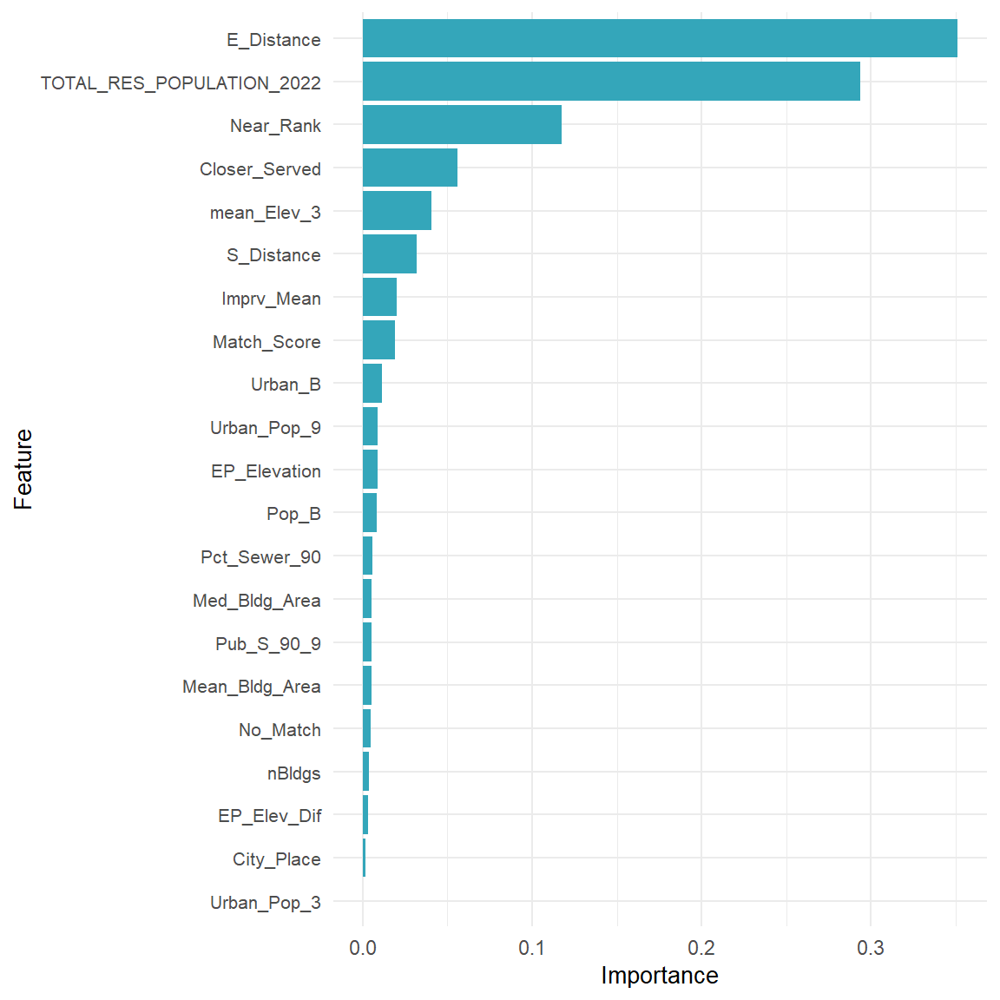
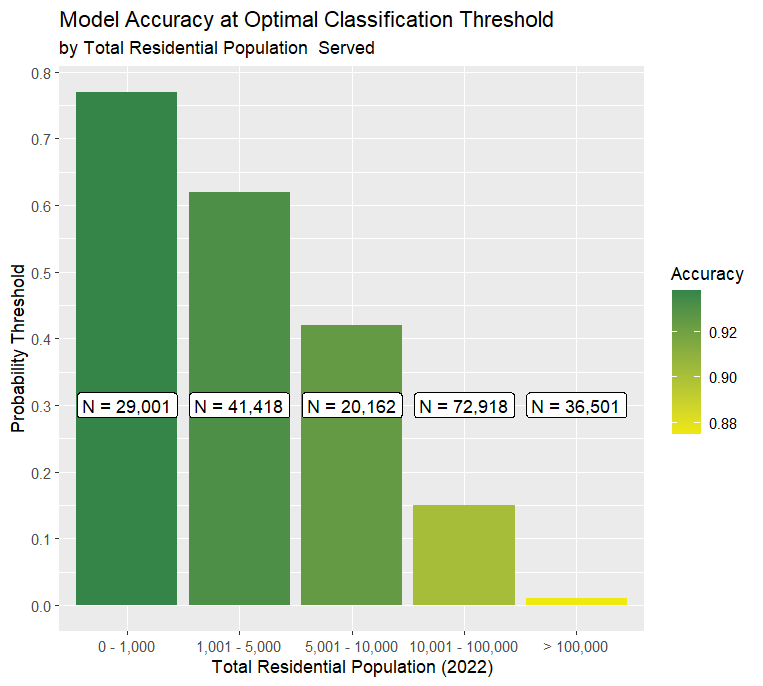

| State | Sewered Population of Utility Sourced Sewersheds | Count of Utility Sourced Sewersheds | % of State Sewersheds | % of Sewered Population Served by Utility Sourced Sewersheds |
|---|---|---|---|---|
| Arizona | 824,116 | 7 |
6%
|
16%
|
| Arkansas | 130,389 | 1 |
0%
|
7%
|
| California | 1,285,642 | 26 |
5%
|
3%
|
| Colorado | 876,568 | 72 |
18%
|
15%
|
| Connecticut | 2,803,707 | 80 |
87%
|
92%
|
| Delaware | 561,514 | 7 |
41%
|
71%
|
| District of Columbia | 2,016,161 | 1 |
100%
|
100%
|
| Florida | 8,423,589 | 153 |
41%
|
49%
|
| Georgia | 187,539 | 16 |
4%
|
3%
|
| Hawaii | 82,287 | 5 |
23%
|
8%
|
| Illinois | 1,807,064 | 37 |
5%
|
16%
|
| Iowa | 749,994 | 2 |
0%
|
28%
|
| Kansas | 227,797 | 8 |
1%
|
10%
|
| Kentucky | 2,042,314 | 228 |
87%
|
70%
|
| Maryland | 4,098,834 | 148 |
90%
|
99%
|
| Massachusetts | 5,596,970 | 123 |
97%
|
100%
|
| Michigan | 2,844,020 | 1 |
0%
|
39%
|
| Minnesota | 3,020,783 | 9 |
2%
|
64%
|
| Mississippi | 71,368 | 13 |
5%
|
5%
|
| Missouri | 5,490,252 | 100 |
12%
|
78%
|
| Montana | 115,130 | 10 |
6%
|
19%
|
| Nevada | 50,016 | 3 |
5%
|
2%
|
| New Hampshire | 669,415 | 61 |
76%
|
91%
|
| New Jersey | 8,395,883 | 150 |
94%
|
99%
|
| New Mexico | 143,229 | 2 |
2%
|
10%
|
| New York | 16,501,156 | 595 |
96%
|
100%
|
| North Carolina | 3,466,906 | 225 |
69%
|
51%
|
| North Dakota | 140 | 1 |
0%
|
0%
|
| Ohio | 5,173,073 | 50 |
6%
|
56%
|
| Oklahoma | 128,026 | 1 |
0%
|
4%
|
| Oregon | 818,842 | 5 |
2%
|
21%
|
| Pennsylvania | 430,629 | 39 |
5%
|
4%
|
| Rhode Island | 732,186 | 16 |
80%
|
94%
|
| South Carolina | 1,749,700 | 29 |
18%
|
47%
|
| Texas | 5,647,426 | 470 |
33%
|
23%
|
| Utah | 3,319,337 | 113 |
100%
|
100%
|
| Vermont | 323,458 | 92 |
98%
|
100%
|
| Virginia | 1,818,789 | 10 |
4%
|
31%
|
| Washington | 4,834,886 | 42 |
16%
|
76%
|
| West Virginia | 797,007 | 164 |
55%
|
66%
|
| Wisconsin | 2,107,614 | 72 |
12%
|
48%
|
U.S. EPA National Sewershed Dataset & Model Documentation
This document serves as background material for the EPA National Sewershed Dataset. The dataset can be accessed via the EPA internal web application
Executive Summary
“The Clean Watershed Needs Survey(CWNS)provides an assessment of the capital investments necessary for states, the District of Columbia, and U.S. Territories to meet the Clean Water Act’s (CWA) water quality goals over the subsequent 20 years. These needs include projects and related infrastructure costs for wastewater publicly owned treatment works, stormwater treatment, nonpoint source control, and decentralized wastewater treatment. The U.S. Environmental Protection Agency (EPA) has prepared the 2022 CWNS Report to Congress in compliance with CWA section 516(b)(1)(B) (33 U.S Code §1375) as well as CWA section 609, which was added by the Infrastructure Investment and Jobs Act (IIJA), P.L. 117-58, November 15, 2021. This Report summarizes the results of EPA’s 17th survey since the CWA was enacted in 1972.”
As part of this survey, utilities submit information related to their treatment plants. Some treatment plants may discharge a portion of their wastewater downstream to other treatment plants. When a treatment plant discharges less than 50% of its wastewater to another facility, we refer to it as an ‘endpoint’, meaning that it is considered the final destination for wastewater prior to treatment and then discharge back into the environment, most frequently via direct discharge into a water body such as a river or ocean. The entire sewered area that contributes wastewater to a specific endpoint is referred to as a ‘sewershed’. A sewershed may therfore refer to a system that is smaller than a single utility or conversely be made up of multiple utilities. The relationship between utilities and endpoints can be derived from CWNS reporting by accounting for reported discharge of wastewater between facilities.
Sewershed extents are not a part of reporting within the CWNS and are otherwise not statutorily required under the CWA. Understanding the sewered area related to an endpoint however, is critical to support the CWA, as well as multiple other agency and administration priorities. Sewershed boundaries can, for example, facilitate wastewater surveillance efforts and link disease tracking to affected populations. The ability to map sewer systems can also be critical to infrastructure and urban planning, providing information on areas that can be developed or could benefit from resources to aid in economic development.
EPA previously developed geospatial data for community water system service areas for the United States. The development of sewershed boundaries was built off of this experience, using machine learning models which are trained on existing sewershed data and utilizing advanced geospatial techniques to account for the complexities of determining what areas of the United States are sewered and which treatment plants they are served by. The output of this dataset is a spatial dataset of polygons that are constructed from hexagons with a resolution of ~0.11 km2
Introduction
Prior modeling similar to sewershed was conducted by EPA in 2024 for the service areas of community water systems. While there are many similarities between public water and wastewater infrastructure, there are several key differences. For example, there are more than twice as many community water systems in the United States as there are publicly owned treatment works (POTWs). In general, sewer systems represent a larger investment in infrastructure than public water service. Water, for example, is pressurized throughout the system and can more easily overcome changes in topography, whereas sewer largely relies on gravity for wastewater flow. Where gravity must be overcome within wastewater systems, pumping or elevator stations must be installed. Sewer lines are also larger than water supply lines and come with increased construction costs. It is not uncommon for a suburban or rural home to have a public water connection for supply and a septic system for discharge of wastewater. However, having access to a sewer and no access to public water occurs far more infrequently. This suggests that sewer systems are more frequently located in more urbanized areas.
The previous model for community water systems utilized census blocks, supplemented with land parcels as the basic building block for service areas. We have changed the spatial unit for this model to H3 hexagons. H3 hexagons are a global grid system that have several key advantages over census boundaries. For example, because hexagons are roughly the same size anywhere on the planet, many statistical computations related to area and distance can be streamlined, which allows for the development of predictor variables that can incorporate more complexity into machine learning models. The level of resolution we chose for the sewershed model was level 9, which is roughly 0.11 km2. Incoporating additional complexity into our predictive data, we also advanced the model from a random forest (used for community water systems) to a boosted tree method, which allows for more confidence in the model predictions and the ability to better determine relationships among predictor data that may have otherwise been obscured.
This document provides detail on how public data was collected, how the model was developed and discusses the resulting national dataset of sewersheds and how it can be used to support EPA’s mission.
Definitions
| Term | Definition |
|---|---|
| CWNS | Clean Watershed Needs Survey |
| Endpoint | The point of convergence for all wastewater collected within a ‘sewershed’ |
| Sewershed | The area that contributes wastewater to a specific endpoint |
| Utility | A public or private entity that provides wastewater treatment services |
| POTW | Publicly Owned Treatment Works |
Existing Sewershed Data
The goal of this project was to publish a comprehensive dataset of sewershed boundaries in the United States that can be linked to the CWNS. To that end, we sought to include as many publicly available sewershed areas as possible. Ideally, every boundary would be sourced from the utility level to represent the most accurate representation of sewersheds possible. However, this data does not always exist, which necessitates the creation of modeling approaches to fill in the gaps.
EPA conducted a rigorous search for publicly available sewershed data through online searches and engagement with stakeholders including federal and state agencies, regional partners, NGOs and academics working in the wastewater field. In total, we obtained 3,280 sewersheds from public sources which could be linked to the CWNS (Table 1).
Methods
Three types of tree-based models were considered for this project: a decision tree, a random forest and boosted trees. All three have advantages and disadvantages that must be considered. A single decision tree is the simplest and most easy to interpret method, but can be overly simplistic and less accurate than more complex models. A random forest is a collection of decision trees with randomized input variables, which can improve accuracy and protect from over-fitting but is less interpretable and requires more computational power. Boosted trees are a more advanced method that build decisions trees in succession. Each new decision tree attempts to solve for error found in the previous tree. This can lead to even better accuracy, but at the cost of increased complexity and reduced interpretability. Boosted trees are especially effective at leveraging variables that may otherwise reflect lower importance levels in other methods. We found that the higher accuracy returned by boosted tree models justified its selection over the other two methods. For brevity, only the boosted tree model is discussed in detail.
Defining the Universe of Sewersheds
Not all records within the CWNS represent endpoints for wastewater collection. The first step in our modeling effort is to establish the universe of systems. To do this, we use the following criteria to select endpoints:
- POTWs that treat human waste (as opposed to wet weather facilities)
- Total receiving population > 0
- facility type contains “treatment plant”
- Residential population > 0
- Percent of Discharge is < 50%
The data compiled from the CWNS was reviewed for accuracy by EPA1.
The CWNS data we are working with was received as a Microsoft Access Database, which is located in ‘Data/CWNS 2022 Database_April2024.accdb’. We use 7 tables from this access database. Note that ‘POPULATION_WASTEWATER_CONFIRMED’ was manually updated by ERG in June, 2024 and does not reflect original data in the access database. Each table was exported from Access to a comma delimited file. The seven files used are:
- ‘Data/FACILITIES.txt’
- ‘Data/POPULATION_WASTEWATER.txt’
- ‘Data/FACILITY_TYPES.txt’
- ‘Data/PHYSICAL_LOCATION.txt’
- ‘Data/FACILITIES_CONFIRMED.txt’
- ‘Data/POPULATION_WASTEWATER_CONFIRMED_updated06242024.csv’
- ‘Data/DISCHARGES.csv’
The following steps describe the process used to query endpoints to be included in modeling efforts. The code can also be viewed in the expandable code tab.
We create a flat file where each row represents a facility and perform the followng steps: - In ‘POPULATION_WASTEWATER”, if no value is given for the column ’END_FACILITY’, we assign it “N”, meaning it is not considered an end facility. - ‘END_FACILITY’ and ‘FACILITY_TYPE’ columns for the ‘FACILITIES_CONFIRMED’ file are set to ‘Y’ and ‘Treatment Plant’ respectively. - Discharge is calculated using the ‘DISCHARGES’ file. Because systems can discharge to multiple other systems, we calculate the sum of discharges to determine the total % discharged elsewhere. If discharge is not reported for a system, we default the value to zero. - Data tables are combined and the filter is applied:
TOTAL_RES_POPULATION_2022 > 0 & FACILITY_TYPE=="Treatment Plant" & PRESENT_DISCHARGE_PERCENTAGE < 50
Total receiving population = total number of people the facility is receiving from, regardless of whether its sent on elsewhere
Matching Utility Sourced Boundaries to CWNS Locations
Utility sourced sewersheds had to be matched with their corresponding CWNS endpoint locations as there is no common identifier between the two datasets. Matching was done through a combination of spatial intersections, distance measurements, text similarity between names and individual visual inspection.
Boundaries were spatially intersected with endpoints. For each match between a boundary and an endpoint, the total number of endpoints that intersect a boundary is divided by 1. For example, if only one endpoint exists within a boundary, the value would be 1. If 3 endpoints intersect a boundary, the value for all three matches (which are represented as three separate rows) would be 0.33. This score is labeled ‘I_Score’ or \(S_i\)
For boundaries that do not intersect any endpoints, a buffer is applied using a distance of 16 kilometers, which was found to be the 95% confidence level for maximum distance between an endpoint and a service area (See ‘Analysis/Endpoint_Sewershed_Distance/Endpoint_Sewershed_Distance.html’ for more detailed information). Only endpoints that have not already been singularly intersected with boundaries are considered in this step. The distance of each endpoint from the edge of the boundary is divided by 16 and then subtracted from 1: \(D_{score}=1-(d/16)\), where ‘d’ is the distance in kilometers. This yields a score such that the closest endpoint will have the highest score. This score is labeled ‘D_Score’ or \(S_d\).
For each pair of matches (CWNS <-> State Boundary), a fuzzy score was calculated to compare the given names of the treatment works. A score of zero indicates that the names are completely dissimilar whereas a score of 1 indicates identical names. This score is labeled ‘F_Score’ or \(S_f\). The method we use is the ‘Jaro-Winkler’ distance:
“The Jaro-Winkler distance (method=jw, 0<p<=0.25) adds a correction term to the Jaro-distance. It is defined as d − l · p · d, where d is the Jaro-distance. Here, l is obtained by counting, from the start of the input strings, after how many characters the first character mismatch between the two strings occurs, with a maximum of four. The factor p is a ’prefix’ factor, which in the work of Winkler is often chosen 0.1.”
The Jaro-Winkler method uses 0 for identical and 1 for completely dissimilar. Therefore: \(S_f=1-D_{JW}\) where \(D_{jw} =\) Jaro-Winkler Distance
- Scores are aggregated to yield a match score.
- If ‘I_Score’ is > 0, then the formula we use is: \(S_m=S_i+S_f\)
- If ‘I_Score’ = 0, we use the formula: \(S_m=S_d+S_f\)
This match score equally prioritizes the proximity of an endpoint with name matching between datasets. In the event that multiple endpoints intersect a boundary, greater weight is then given to name matching.
Spatial Resolution
Hexagons were chosen as the spatial unit for the model for several reasons. Hexagons are roughly the same size across the United States, they allow for more consistent statistical calculations related to area and distance and density values do not need to be calculated. Hexagons also allow for more complex network calculations at higher computation rates because distance can be inferred as a constant between each neighboring pair of hexagons. Finally, hexagons offer an advantage to census blocks, which are delineated based on physical boundaries such as roads and rivers, which can include undeveloped areas, especially in rural settings. Using hexagons allows us to create more detailed sewersheds while reducing overall computation requirements. For this modeling effort, level 9 hexagons were used, which are ~0.11 km^2 in area.

Model Development
The goal of the model is to predict whether a hexagon is sewered by a specific endpoint. Essentially the model is answering two questions. 1. Is the hexagon connected to sewer? and 2. If so, which endpoint is the most likely to serve that hexagon? The model is therefore a binary classification model, which returns a probability that a hexagon is part of the sewershed for a given endpoint location. The model considers each row of a table as a unique pairing between a specific hexagon and a specific endpoint. Additional data within each row are the ‘features’ which are predictor variables relating to physical, environmental and demographic variables unique to that pairing.
Defining Area of Consideration
To minimize computation time and increase efficiency, utility sourced sewersheds were used to test the maximum distance between an endpoint and the furthest possible hexagon that is served by that endpoint.
Feature Engineering
In machine learning, ‘features’ refer to the input data that will act as predictors for the model. ‘Feature engineering’ therefore refers to the methods we use to prepare the data so that it contributes to a successful model. The primary source for the sewershed model is the CWNS, which includes the locations of treatment plants that are considered ‘endpoints’, meaning that it is the final stop for wastewater before being discharged back into the environment. The sewershed is therefore the entire contributing area that discharges wastewater to each endpoint.
Sewered areas are typically developed, have relatively dense populations and are close to a treatment plant. Information fed into the model must provide relevant tools for relationships to be determined. For example, sewer systems, unlike public water systems, are generally not pressurized, meaning that elevation may be a factor. The distance between a hexagon and a treatment plant may vary depending on how many people the treatment plant serves. A hexagon with no population, but with several large buildings and very little green space may indicate an industrial zone.
The following features were created and tested for inclusion in the model:
The random forest model requires several input datasets, which will provide contextual information to help it determine of an area is served by a public wastewater collection system, and which collection system it is served by. These data must be prepared to conform to our output geospatial data, which are level 9 H3 hexagons. The hexagons are roughly 0.1 km2 in area. Here, we describe each input dataset and how it was developed to conform to the hexagon grid.
1990 Census Data
Data included from the 1990 census includes total population and housing units (1990 Census: STF 1 - 100% Data); estimated number of housing units on public sewer and estimated number housing units on public water (1990 Census: STF 3 - Sample-Based Data).
1990 Census data was cross-walked to 2020 boundaries using the cascade weighting method described in Murray & Hall (2024) and the block-to-block crosswalks published by the IPUMS. Once cross-walked, the data was included with the 2020 Census data described in the next step.
2020 Census Data
2020 Census data included 100% counts at the census block level for population, housing units and count of urban/rural population. To convert census blocks into hexagons, a building weighted calculation was performed. Microsoft building footprints larger than 40 square meters (about the size of a detached 2-car garage) were intersected with both hexagons and census blocks. The percent of buildings within each block were calculated for each hexagon and used to weight census data into hexagon parts. Hexagon parts, which were subdivided by census blocks were then re-aggregated to complete hexagons using the H3 Index for each. This yields estimated Census counts at the hexagon level.
Building Footprints
When the previous step of weighting census data was performed and buildings were intersected with hexagons, a table was saved that included one row for every building, along with its associated hexagon, total area in km2 and its height as estimated by Microsoft. Further predictive variables were derived from these data including:
- Mean building area
- Median building area
- Count of buildings
- Mean building height
- Median building height
- Maximum building height
For buildings where height was not available, we applied a value of 4.5 meters, which is roughly the height of a one-story building with a roof.
Land Cover / Land Use
The National Land Cover Database was used to derive characteristics for each hexagon. Data was obtained in raster format from MRLC and pixels were extracted to each hexagon. We determined the mode (maximum frequency) of each land cover type within each hexagon. Land cover classes that are not part of the four developed classes were binned into either ‘water’ or ‘rural/other’ (Figure 2)

We also derived impervious surface using the median and mean impervious surface percentage within each hexagon.
Road Networks
Variables for roads were derived from the OSM dataset. For each hexagon, we extracted OSM ‘highways’ which include the following classifications:
- motorway
- trunk
- primary
- secondary
- tertiary
- residential
- unclassified
For detailed information on what each class represents, please see OSM key:highway.
We calculated the total road distance within each hexagon in meters.
Distance and Neighborhood Metrics
For each hexagon, two neighborhoods were created, one with a radius of 3 hexagons and one with a radius of 9 hexagons. Census data, land cover data and building data were aggregated by neighborhood. For all variables, the neighborhood of each variable represented the sum of the neighborhood, except land cover, which uses the mode and impervious surface, which was calculated both as the mean and median of the neighborhood.
Distance was calculated in two ways. Euclidean distance was calculated as the shortest number of hexagons between the endpoint and each hexagon. Manhattan distance was calculated as the shortest number of hexagons between the endpoint and each hexagon, which have paved roads that are not large (interstate-style highways.)
Endpoint Rank
For each hexagon - Endpoint relationship, the Euclidean distance rank was calculated. For example, for a relationship between a hexagon and an endpoint where there are four other endpoints that are closer, a distance rank of 5 would be assigned. Additionally, the total residential populations served for other endpoints were summed into features representing total population served of closer endpoints and total population served of farther endpoints.
Area & Name Matching
Each hexagon was spatially joined to its parent sub-county, place and county geography (Census Bureau TIGER/Line). The names of each of these geographies was then compared to the facility name of each CWNS endpoint within the area of consideration by using a Jaro-Winkler string distance calculation to determine name similarity score. The Match Score was calculated as whichever of the three scores returned the best result so as to provide flexibility for treatment plants that may be named after geographies of different sizes.
Selecting and Splitting the Training and Testing Datasets
Machine learning models require a training dataset, which is used to train the model to recognize patterns in the data. These patterns are used to create a model, which will be used on additional data to return a probability that a hexagon is part of the sewershed for a given endpoint location. A separate testing dataset, which has not been exposed to the model training process is then used to validate the model and measure performance. To ensure that the model was trained and validated on the best possible data, a linear regression was used to relate the total residential population served by the endpoint in the CWNS with the 2020 census population for the same area. Where the residual of the population for a utility sourced system was more than two standard deviations away from the mean, that sewershed was removed from the training and testing sets, but retained for inclusion in the final dataset.
CWNS endpoints were randomly sampled into either training or testing, with 70% of endpoints used for training and 30% used for testing. The area of consideration for the model to assign probabilities to hexagons is ~3,200 km^2, meaning that there is a class imbalance between hexagons that are ‘FALSE’ (not sewered by that specific endpoint) and ‘TRUE’ (sewered by that specific endpoint). This class imbalance was corrected by randomly sampling ‘FALSE’ hexagons to match the number of ‘TRUE’ hexagons in the training set.
Model Fitting
A boosted tree model was selected for its ability to resolve complex interactions and for its improved accuracy over decision tree and random forest models, which were tested. The algorithm used was the xgBoost (extreme gradient boosting), obtained through the ‘xgboost’ package in R. The training data was composed of 200,000 observations (100,000 ‘TRUE’ and 100,000 ‘FALSE’). The model was tuned to find the optimal parameters for the model which was done using a grid search with 5-fold cross validation. For tuning, ‘gbtree’ and ‘gblinear’ methods were tested, with maximum tree depths ranging between 3 and 10, a minimum child weight between 1 and 10, a subsample between 0.5 and 1 and a column sample by tree between 0.5 and 1. Early models incorporated all features but were later restricted to features with high importance values.
Constructing Sewersheds from Model Results
Once the model was applied nationally, probabilities for hexagon-to-endpoint pairs were aggregated into distinct sewersheds for each endpoint. To determine a ‘probability threshold’, meaning the probability above which is considered a positive result, the model was tested across a classification threshold between 0.01 and 0.99 and broken down by sewershed population. Bins for population served are ‘< 1,000’, ‘1,000 - 4,999’,‘5,000 - 9,999’,‘10,000 - 99,999’ and ‘10,000 +’. The process for hexagon selection and aggregation is as follows:
CWNS endpoints are ranked from smallest to largest ‘Total Residential Population’. This ensures that smaller systems take priority over larger systems when a hexagon has more than one high probability and avoids overlapping sewersheds.
For each endpoint, hexagons are ranked by descending probability of being part of the sewershed.
A cutoff is determined for the number of hexagons to include in the sewershed using the following criteria:
- The row at which the cumulative sum of hexagon populations reaches the total residential population reported in the CWNS
- The row before the probability drops below the probability threshold.
- Selected hexagons within the cutoff are spatially aggregated into a multi-polygon, then exploded into individual polygons. The largest of the polygons is considered the primary sewershed area. Distance is then measured (edge-to-edge) between the primary polygon and the secondary polygons. Secondary polygons are considered spatial outliers if:
- The area of a secondary polygon represents < 5% of the total sewershed area
- The distance between the secondary polygon and the primary polygon is between 5 and 10 km and the total area of the secondary polygon is < 10% of the total sewershed area
- The distance between the secondary polygon and the primary polygon is > 10 km and the area of the secondary polygon is < 30% of the total sewershed area.
Once outliers were identified, they were removed from the sewershed. Any hexagons that were within an outlier polygon or beyond the population / probability cutoff were considered to still be available for larger sewersheds. Any hexagon that was determined to be part of the sewershed (not an outlier) was removed from consideration for larger sewersheds. Once final sewersheds were delineated, interior holes were filled to aid in visualization.
Validation
Two validations were performed to evaluate the percent of agreement by area and the percent of the sewered population captured by the estimated sewersheds. Sewersheds were modeled for the endpoints within the testing dataset and compared with their utility sourced versions. To calculate area, a spatial intersection was performed and percent capture was calculated as the percent of the area of the modeled sewershed that was within the utility sourced sewershed, divided by the total area of the utility sourced sewershed. The percent of the sewered population captured was calculated as the cumulative sum of the population within hexagons assigned to an endpoint divided by the total residential population as reported in the CWNS.
Results
In total, we started with 54,738 rows of data, which were queried down to a universe of 17,272 individual endpoints to be included in the modeling efforts. Of these endpoints, 276 were found to either have duplicated geo-locations with multiple CWNS IDs or were otherwise found to have insufficient data reported in the CWNS. Therefore, the final universe of endpoints used for sewershed delineation is 16,996.
A total of 3,187 sewersheds were succesfully matched with their corresponding CWNS endpoints, leaving the model to estimate sewersheds for 13,809 endpoints.An application was built to enable multiple team members to perform validation of the matches (Figure 3)

Model Tuning
21 variables were identified as the most important features for the model (Figure 4):
- Euclidean Distance
- Total Residential Population of the endpoint (CWNS)
- Endpoint Near Rank
- Population Served by Closer endpoints
- Mean elevation of the 3-hexagon neighborhood
- The difference between Euclidean and Manhatten distance
- Mean Imperviousness
- Name Match Score
- Count of urban population between the hexagon and endpoint.
- Count of Urban population within the 9-hexagon neighborhood
- Elevation of the endpoint
- Total population between the hexagon and the endpoint
- % of the hexagon that was sewered in 1990
- Median area of buildings within the hexagon
- % of the 9-hexagon neighborhood that was sewered in 1990
- Mean Area of buildings within the hexagon
- Binary class of if a name match was found
- Total number of buildings within the hexagon
- The elevation difference between the endpoint and the hexagon
- City / Place Match
- The count of urban population within the 3-hexagon neighborhood

The results of the model tuning returned an optimal model using the gbtree method, a maximum tree depth of 7, a minimum child weight of 9.33, a sub sample of 0.994 and column sample by tree of 0.966. The overall accuracy of the final model was 90.65% with a sensitivity of 92.6% and a specificity of 88.9%.
The probabilty cutoff was calculated from the final model predictions on the testing dataset. The optimal cutoff ranged from 0.11 for large sewersheds to 0.77 for small sewersheds (Figure 5)

Sewershed Validation
Compared with the utility sources sewersheds, modeled sewersheds from the testing dataset had a median population capture of of 74.4% (Table 2).
| Percent of Sewer Population Captured by Modeled Sewersheds | |||
|---|---|---|---|
| Metric |
Sewershed Validation
|
||
| 25th Percentile | Median | 75th Percentile | |
| Population | 50.98 | 74.39 | 90.23 |
| Area | 38.93 | 59.43 | 77.63 |
In total, the final dataset includes 16,961 sewersheds, meaning only 30 endpoints were not able to be modeled. The dataset can be accessed and viewed on the EPA internal web application
Appendices
Appendix I - Existing Sewershed Data
Sewered Population of Utility-Sourced Sewersheds by State
| State | Total Sewered Population | Sewered Population of Utility Sourced Sewersheds | Percent of Total Population Served by Utility Sourced Sewersheds |
|---|---|---|---|
| DC | 2,016,161 | 2,016,161 | |
| UT | 3,319,337 | 3,319,337 | |
| CT | 3,036,374 | 3,034,262 | |
| MA | 5,603,490 | 5,596,970 | |
| VT | 324,419 | 323,458 | |
| NY | 16,575,382 | 16,501,156 | |
| MD | 4,123,744 | 4,098,834 | |
| NJ | 8,516,833 | 8,395,883 | |
| RI | 777,066 | 732,186 | |
| NH | 732,650 | 669,415 | |
| MO | 7,049,516 | 5,490,252 | |
| WA | 6,351,002 | 4,834,886 | |
| DE | 795,030 | 561,514 | |
| KY | 2,901,718 | 2,042,314 | |
| WV | 1,213,485 | 797,007 | |
| MN | 4,706,357 | 3,020,783 | |
| IL | 11,155,658 | 7,025,064 | |
| OH | 9,170,235 | 5,173,073 | |
| NC | 6,805,221 | 3,466,906 | |
| FL | 17,360,216 | 8,423,589 | |
| WI | 4,360,165 | 2,107,614 | |
| SC | 3,751,502 | 1,749,700 | |
| US | 268,774,074 | 107,360,311 | |
| MI | 7,328,800 | 2,844,020 | |
| VA | 5,812,602 | 1,818,789 | |
| IA | 2,708,432 | 749,994 | |
| TX | 24,593,602 | 5,647,426 | |
| OR | 3,886,450 | 818,842 | |
| MT | 618,514 | 115,130 | |
| AZ | 5,006,856 | 824,116 | |
| CO | 5,703,514 | 876,568 | |
| KS | 2,330,820 | 227,797 | |
| NM | 1,503,462 | 143,229 | |
| HI | 968,526 | 82,287 | |
| CA | 39,408,461 | 2,833,642 | |
| AR | 1,999,881 | 130,389 | |
| MS | 1,453,998 | 71,368 | |
| PA | 9,795,239 | 430,629 | |
| OK | 2,989,958 | 128,026 | |
| GA | 7,366,822 | 187,539 | |
| NV | 2,730,563 | 50,016 | |
| ND | 619,054 | 140 | |
| AK | 542,024 | 0 | |
| AL | 3,069,230 | 0 | |
| ID | 1,669,252 | 0 | |
| IN | 4,670,992 | 0 | |
| LA | 3,360,416 | 0 | |
| ME | 672,507 | 0 | |
| NE | 1,538,663 | 0 | |
| SD | 670,065 | 0 | |
| TN | 4,631,853 | 0 | |
| WY | 477,957 | 0 |
Sources of Utility Sourced Sewersheds
Footnotes
After review, it was determined that it is NOT safe to assume all rows in ‘FACILITIES_CONFIRMED.txt’ are all end points. It is safe to assume all rows in ‘POPULATION_WASTEWATER_CONFIRMED.txt.’ are endpoints. rows identified as having ‘CHANGE_TYPE’ = ‘New’ should be removed.↩︎